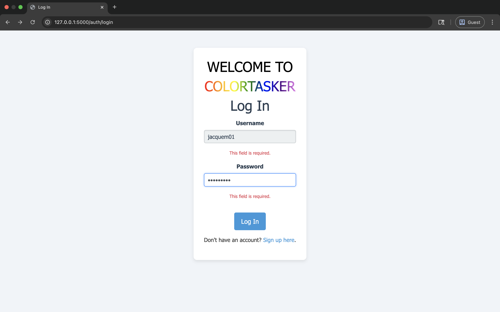
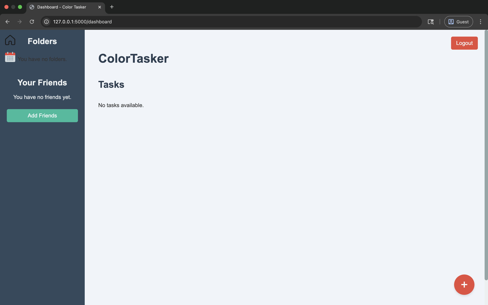
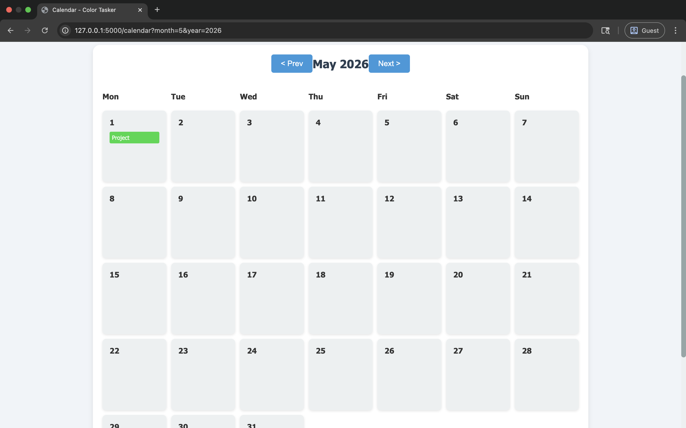

CSI Projects
Task Management Web App (CSI 3370)
- With a team built an task management web application built with Flask that helps teams organize and track their work with color coded tasks, folder organization, and real time collaboration features.
- Implemented front end design and calendar functions.



Movie Recommendation System (CSI 3450 - Database Systems)
- Designed ER schema and built relational database (MySQL) for users, movies, ratings, genres—as shown in attached schema.
- Implemented collaborative filtering algorithm in Python to recommend movies based on user ratings.
- Presented results with a web-based interface built using Flask.


Tea Time Magazine — Crafting & DIY Web Application (Front-End)
- Built a responsive magazine-style homepage with category tiles (Sewing, Knitting, Embroidery, Origami, Jewelry, Drawing), search, “most recent” sort, and pagination—as shown in the attached screenshot.
- Implemented reusable article-card components and category filters using HTML5, CSS3 (Flexbox/Grid), JavaScript; organized content via JSON and lightweight utilities.
- Optimized for accessibility and mobile: semantic markup, ARIA labels, keyboard focus states, and high-contrast color tokens; tested across modern browsers.